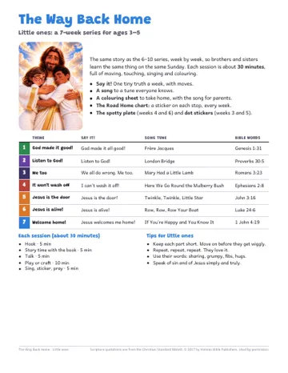
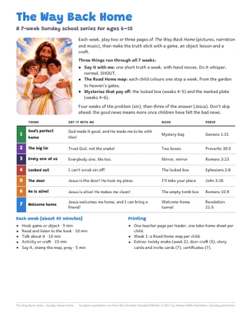
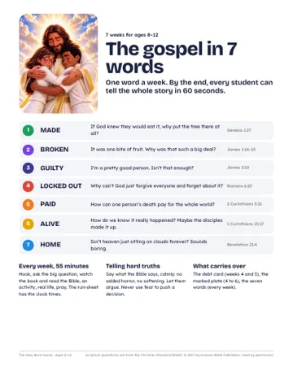
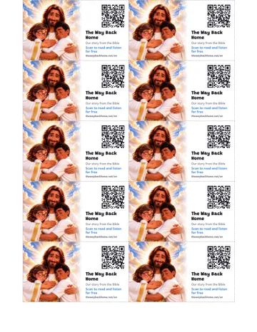
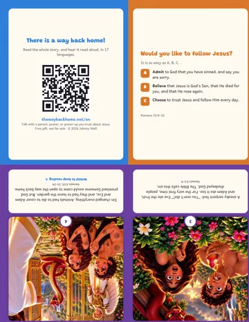
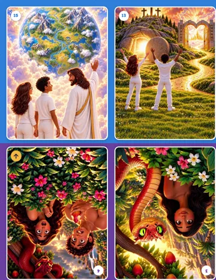

Free lessons and printables to go with The Way Back Home. Open, print, and share.

30-minute sessions full of songs, moves and colouring sheets, with a sticker chart for the Road Home.

Teacher pages and take-home sheets: a game, an object lesson and a craft each week, plus story cards and a certificate.

One word a week, one hard question each week. By the end, every student can tell the whole story in 60 seconds.

Ten business-card-size cards per page with a QR code that opens the book in your language.

One sheet that folds into a little booklet: the whole story, how to follow Jesus, and a QR code to the book. No cutting or staples.

The wordless version: all 15 pictures in order and one QR code to the book. Works for any language.